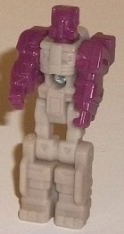
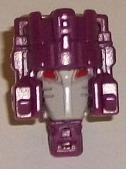
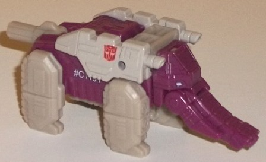
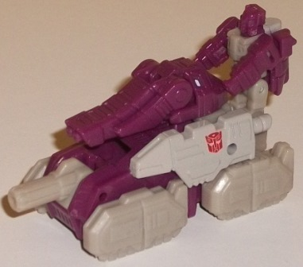
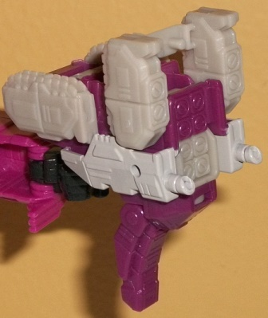

Allegiance
: Autobot
Size
: Titan Master Set
Difficulty of Transformations
: Very
Easy
Color Scheme
: Dark dull fuchsia,
very light milky pale brown, very light glossy pale brown, and some light
pale sky blue and red
Rating
: 7.4
Just like with
Sawback
,
Shuffler is an homage to a very rare, obscure Japanese Headmaster toy that
went right from elephant to robot head. For a Titan Master set, of course,
things have been.... *ahem*...
shuffled around
a bit. In the Titan
Master's robot mode, his mold detailing is done to make him look like a
humanoid elephant. The actual main body details are pretty typical-- he's
got normal fists molded into the ends of the arms, as well as a few minor
rectangular and triangular details on his body, hips, and upper legs. His
feet, however, have details molded in to look like elephant feet, which
is ingenious. For his head Hasbro TRIED to give him a trunk, but with the
Titan Master square proportions it doesn't really look that great. He's
got two eyes and a little trunk that sort of goes from his nose down the
bottom of his face in front of where his mouth would be. It looks pretty
weird. (The rest of his head is pretty typical, being pretty square with
some antennae molded into the sides.) Unfortunately, as is common in the
line, the robot mode has no paint apps at all. He's got a dark dull fuchsia
on the head and arms, and a rather blah very light pale brown on his body
and legs. They contrast against each other pretty decently, but the complete
lack of paint apps in particular hurts his facesculpt, as given how dark
the plastic is it's quite difficult to make out those tiny unique details
there. Like all Titan Masters, Shuffler can move at the neck, as well as
back-and-forth at the shoulders, hips, and knees (the latter two as one
for both legs, since the legs are molded together). In head mode, Shuffler's
made to look like a better-proportioned version of his G1 toy's head mode.
He's got a light pale brown faceplate with little etches on the sides,
two angular red eyes, and the rest of his head mode is dark dull fuchsia,
with what looks like a multi-pronged helmet over the rest of his head.
The details on the forehead match that on the original fairly well, but
are more proportional (the original Shuffler has some odd proportions in
this mode), which is pretty darned cool. He's got some great, unique mold
detailing overall because of this.
As for the accessory,
its primary mode is a robotic elephant who looks remarkably close to the
G1 toy's alternate mode, just with better mold detailing. The body is a
bit overly rectangular and a titch long, but otherwise the toy's pretty
proportional overall, with a little peg-tail, thick legs, and a sloping
forehead with a pretty decent-looking trunk with tusks molded into the
side. The mold detailing on the toy is very well-done-- little segments
on the trunk with what looks like dual ports for a gun at the end of it;
little light sky blue eyes on the head; shoulder guns with some basic details
near the back; very intricate tread and armor detailing on the legs; and
quite a lot of ridged details on the main body. (The Titan Master shoves
up into the abdomen and out of plain sight in this mode.) The color scheme
is pretty basic, being the same dark dull fuchsia on the main body and
head and light milky pale brown on the appendages. They contrast decently,
but they're both pretty bland colors, and the only paint used on the toy
is the aforementioned light blue on the eyes and then the shoulders are
painted more of the light pale brown, though because it's paint it's more
glossy than the milky shade on the plastic. That said, it IS pretty accurate
to the source material. For articulation, Shuffler can move up and down
at the tail, forward slightly at the top of each leg (though the front
pair and back pair of legs each move as one), his head can rotate around
where it meets the body, and the trunk can move up and down where it meets
the head.
The other main mode
for the accessory is a tank, which is done by collapsing the legs so that
the tread details are on the bottom and then moving up the head and rotating
it around while pointing the trunk forward. Even though it isn't exactly
completely different from the elephant mode-- pretty much all the mold
details from that mode are visible here-- it still looks pretty solid.
The legs make for nice treads, the main body works as a tank, the tail
peg works as a front gun, and the end of the trunk also works nicely as
a top-mounted dual gun. There's little pegs on the back end that can hold
the Titan Master standing up there, "manning" the little tank.
To transform the accessory
into its weapon mode, the front legs are rotated back into their elephant
position and the elephant head and tail peg are both pointed up. Then you
just reorient the toy and there you go. I will say it's nice to have a
weapon mode that actually looks substantially different from the accessory's
other modes-- all of the revealed mold detailing on the front of the body,
as well as some on the front of the legs, has "missile pack" details, making
this a missile launcher weapon with those two little guns on the shoulders
to boot. It's a pretty neat idea and actually reveals that some real thought
went into this mode (as opposed to most other Titan Master sets' weapon
modes, sadly). That said, it still has some definite downsides, the most
obvious of which is that the elephant head just kinda hangs out there at
the bottom without tucking out of the way or anything. It's a bit weird-looking.
The rest of the mode packs up pretty well behind the front, and there's
enough area around the peg for most Transformers to easily handle the accessory
in this mode. I do really wish all those missile pack details had some
paint on them, however, as it took me a second the first time I transformed
this to realize what the heck this mode was supposed to be-- those missile
details aren't nearly as obvious as they should be.
Titans Return Shuffler
is a remarkably solid Titan Master set. The Titan Master itself has a unique
hook with some beastly details in its robot mode and a unique, obscure
character sculpt done for the head mode. All three of the accessory's modes
are also quite solid, with little downsides outside of having a dull color
scheme and not nearly enough paint, the latter of which is sadly par for
the course on all these Titan Master sets. If you get only one Titan Master
set from this line, I'd make it this one.
Review by Beastbot